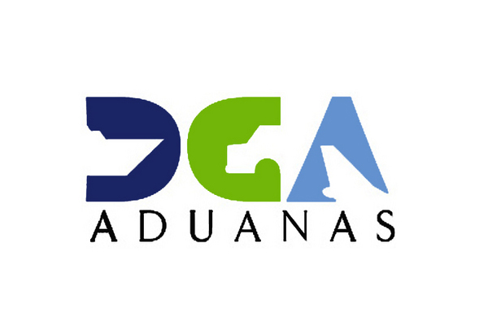

La Dirección General de Aduanas es una dependencia del Ministerio de Hacienda de la República Dominicana. Siendo la autoridad nacional de frontera, su responsabilidad trasciende el rol recaudador para ser garante, asimismo, de la salud de la población y la seguridad del Estado.
Ministerio de recaudacion
DGA

DGII
La Dirección General de Impuestos Internos (DGII) tiene la responsabilidad de recaudar y administrar distintos tipos de impuestos, entre los principales se encuentran: Impuesto sobre Transferencias de Bienes Industrializados y Servicios (ITBIS), Impuesto Sobre la Renta (ISR), Impuesto al Patrimonio Inmobiliario (IPI).
JCE
La Junta Central Electoral (JCE) de la República Dominicana es un organismo especial del gobierno de la República Dominicana encargado de velar por un democrático e imparcial proceso electoral, además administrar el registro civil, el estado civil de todos los ciudadanos dominicanos.
MOPC
El Ministerio de Obras Públicas y Comunicaciones fue creado en el año 1854 con el nombre de GUERRA, MARINA Y OBRAS PÚBLICAS, luego el 28 de diciembre del 1959 se conoció con el nombre de SECRETARIA DE ESTADO DE OBRAS PÚBLICAS Y COMUNICACIONES, nombre dado por ley el 28 de noviembre del 1966.
Somos el Ministerio de Turismo, entidad catalizadora del Sector Turístico de la República Dominicana.
Planear, programar, organizar, dirigir, fomentar, coordinar y evaluar las actividades de la Industria Turística del país, de conformidad con los objetivos, metas y políticas nacionales que determine el Poder Ejecutivo.
Determinar y supervisar los Polos de desarrollo turístico en el país y orientar los proyectos a realizarse en estos.
Orientar, de conformidad con las regulaciones al respecto, el diseño y construcción de todas las obras de infraestructura que requieran el desarrollo de los distintos proyectos turísticos.